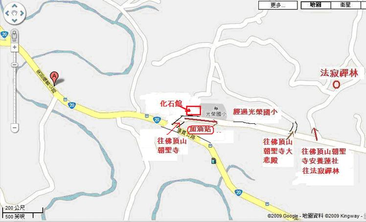

2011年11月18 ~ 26日。
聖法大長老來台行程預計11月15日來台，12月1日返國。於11月19日上午9:00舉辦大供養日，歡迎大眾一起來供養僧眾。
止禪(四禪八定)與觀禪(毘婆舍那)。由出入息念(觀呼吸)、四大界差別觀(觀四大)下手。
◎持午(晚上不提供膳食)。
Ven. Ariyadhamma Mahathera（聖法大長老），斯里蘭卡籍，生於1937年4月24日。出家於1956年（17歲），1959年7月15日受比丘戒。他的戒師是 Ven. Kedevadduwa Jinawamsa（聖種大長老）為 Shri Kalyani Yogashrama Sajstha（斯里．卡里阿尼森林派）創立者（1951.6.17），屬於藍曼匿派（Ramabba Nikaya，斯里蘭卡三大派系之一）。他跟隨 Ven. Matara Wri Banarama 及本派其他長老學習三藏。聖法大長老威儀具足，德高望重，心性慈祥，博學強記，精通三藏、禪法。 1997 年曾受帕奧禪師指導禪修。長老現任斯里．卡里阿尼森林派總秘書，駐錫：Na Uyana Aranya Senasanaya（龍樹林僧院）, Pansiyagama 60554, Sri Lanka（斯里蘭卡）。
（按：斯里．卡里阿尼森林派有一百多所道場，絕大部分在鄉下、森林，本派約有五百位比丘，持戒精嚴，不持金錢，素食。該派有九處禪修中心，過去以教導馬哈希禪法為主，目前有些道場教導帕奧禪法。）
如今來自斯里蘭卡的龍樹林僧院（Na Uyana Aranya Senasanaya ）的聖法大長老（Most Venerable Na-Uyane Ariyadhamma Mahathera）慈悲接受法寂禪林的至誠邀請，百忙中撥冗於11月15日（星期二）蒞台弘法。聖法大長老也帶領四位僧眾一起到來，其中包括龍樹林僧院的現任主持與禪修業處指導老師—聖喜長老（Ven. Ariyananda Thero）。因首次到訪台灣，屆時，希望台灣各界廣大的有緣人，有機會與大長老及僧團結緣植福。因此法寂禪林將會安排有供僧法會、佛法開示、禪修營、短期出家等活動，歡迎樂法者踊躍參與此非常難得及殊勝的盛會。
擁有五十七個戒臘的聖法大長老是南傳佛教界的一代宗長。早期曾經跟隨不少資深的大長老座下嚴謹地修習巴利語、三藏聖典與禪修法門。於1996年，雖然已經身為三藏法師和眾多弟子依止的老師，但求法心切的大長老依然能夠臨時放下老師的身份，率領弟子僧眾一起到緬甸帕奧禪林向上首大業處阿闍梨——帕奧禪師修習止觀禪法。由於具有雄厚的波羅蜜，大長老在一年後就成功完成了帕奧禪師所傳授的修學課程，並獲得帕奧禪師授權教導依據《清淨道論》的止觀法門。2006年3月13日大長老榮獲緬甸政府頒授大業處阿闍梨（Mahakammatthanacariya）殊榮。
大長老近代不僅在斯里蘭卡盛名如雷貫耳，他的威德與攝受力也聞名海外各界。目前，在大長老座下出家修行的弟子眾大約有四千多位，在斯里蘭卡大約有150個大大小小的叢林道場，最大的叢林道場則約有兩千至四千畝不等。大長老的叢林道場與修行系統獲得斯里蘭卡政府的承認與大力支持，因此而營造了非常良好的條件，讓許許多多有意體證佛陀正法的海外佛弟子們都有個殊勝的修學環境去長期參學與潛修。
大長老的德行與智慧是眾所周知的，許多人被大長老親切溫和的素質、良好的舉止、博學的知識和深廣的智慧所攝受，曾經在大長老身邊服務過的淨人們也無不對大長老所散播的慈悲與親和力信服。
近年，大長老曾受到斯里蘭卡總統的邀請到總統府為總統開示，他的開示也通過媒體、電台和電視傳播到斯里蘭卡各處，許多佛法開示也被印成書冊免費分贈。此外，盡管大長老的僧務繁重，再加上年屆七十有四的古稀之齡，大長老仍慈悲接受大馬、印尼、新加坡、泰國等等佛教團體的摯誠邀請，戒饒益、法饒益。這種廣為眾生福利忘軀的精神著實讓我們肅然起敬。
如今長老應邀來台，希望諸法友藉此殊勝的法緣親近與供養以大長老為首的大僧團，為自己長遠的未來廣植廣大福業；即使今生因緣不具足於修行、但若能提升和淨化生命，根植於清淨的法緣直到最終得到究竟安穩與永恆的快樂！
因此再呼籲所有真心尋求淨化、解脫的朋友們莫錯失與大長老結法緣的稀有機緣。希望每個人都能為自己未來長遠的幸福與安樂耕耘，在無上的福田播下殊勝的種子。
Google 地圖：

{kind=link}